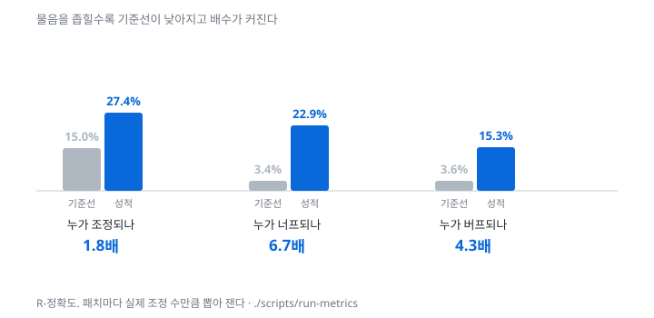
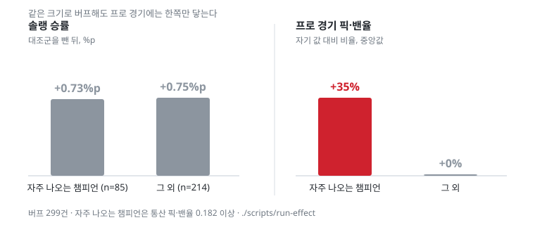

공개 데이터만으로 다음 패치에 조정될 챔피언을 좁힌다. 저장소 →
최신 패치는 이 페이지에 없습니다. 여기 쓴 솔랭 지표는 u.gg 아카이브에서 온 것이라 16_13 패치(2026-06-24 출시)까지의 자료만 싣습니다. 그 뒤 패치는 Riot API 로 우리가 직접 모은 경기로 예측하는데, 그 경기를 모은 개인 키는 Riot 규정상 공개용으로 쓸 수 없어 여기 올리지 않습니다. 최신 패치 예측은 개발자의 로컬 화면에서만 봅니다.
물음을 좁힐수록 무작위 대비 배수가 커진다.

같은 크기로 버프해도 프로 경기에는 한쪽만 닿는다.

넷 중 셋은 헛짚습니다. 후보를 좁히는 도구이지 정답을 주는 도구가 아닙니다. 측정 방법과 실패한 시도는 결과 문서에 있습니다.
이 페이지는 같은 자리의 정적 API(api/v1/index.json)만
읽습니다. 누구나 같은 JSON 을 받아 쓸 수 있고, 응답마다 JSON Schema 가
api/v1/schema/ 에 있습니다.
근거 앞의 표시는 출처입니다 — R1 닮은 과거 사례 · R3 그 패치의 수치 · 규칙 밸런스 규칙.
자료 출처
읽을 때